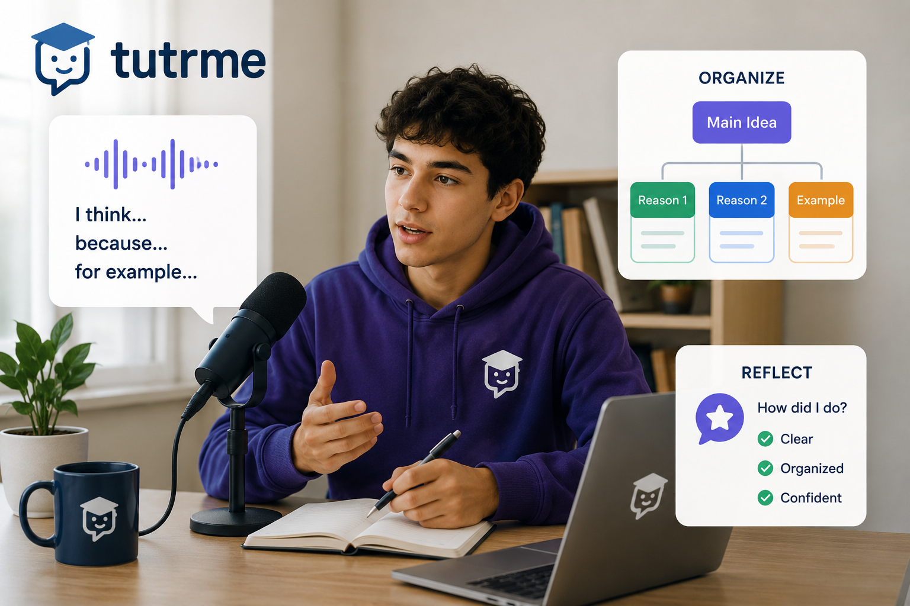

TutrMe AI Learning Intelligence Platform
Brand system
Friendly learning intelligence, built around the TutrMe mark
The showcase uses the logo's graduation-cap and chat-bubble personality as the visual foundation: approachable, academic, conversational, and calm.
Live sensory-friendly demo
Calm 3D learning map
The demo uses soft motion, low-noise colors, and a pause control so the experience stays learner-friendly. The graphic runs locally in the page.
Learning intelligence
Education-friendly product framing
Adaptive paths
Recommends the next learning step from progress, skill confidence, and topic readiness.
Support signals
Shows tutors where a learner may need reinforcement without overwhelming the learner.
Sensory-aware UI
Uses calm motion, readable spacing, and gentle color contrast for a friendlier study experience.